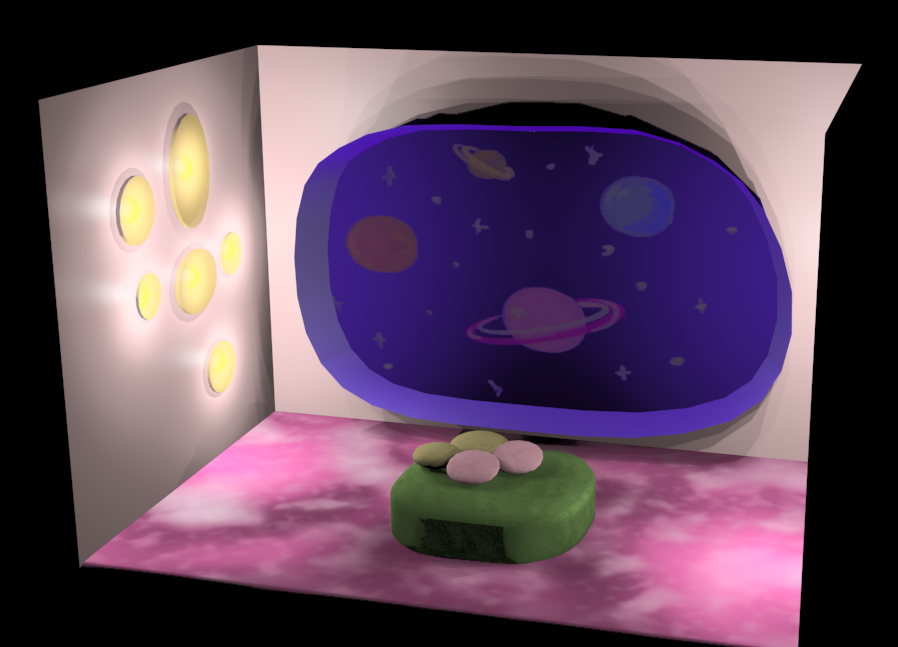
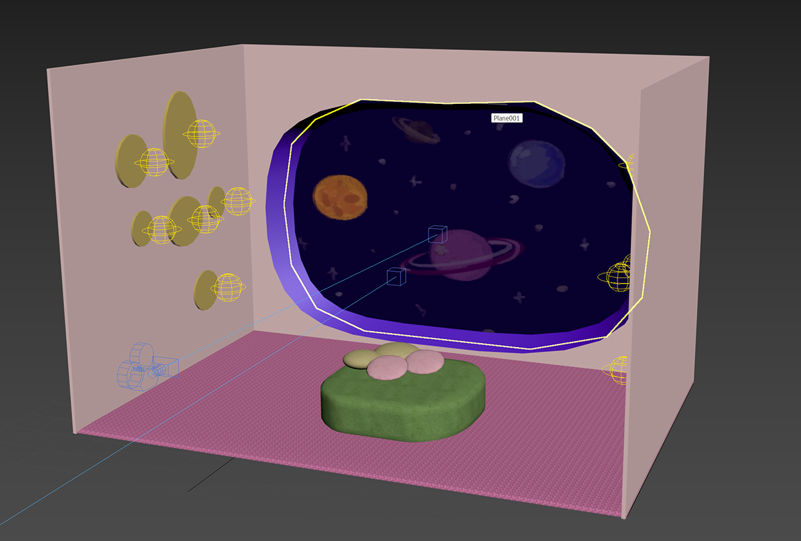
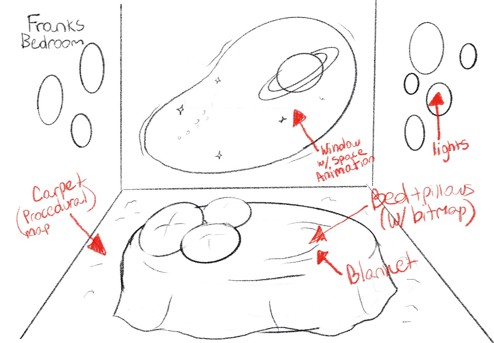

3D Artwork
3D Model: Frank
  3d model of a room designed for my character Frank. This was a separate project done later and was also created through 3Ds Max. It is inspired by retro-futurism, and is meant to have aspects of the stereotypical designs in old space cartoons and shows, such as The Jetsons.